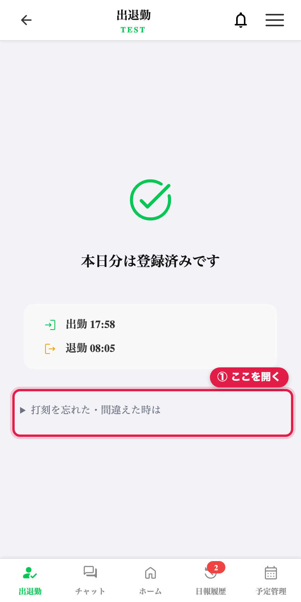
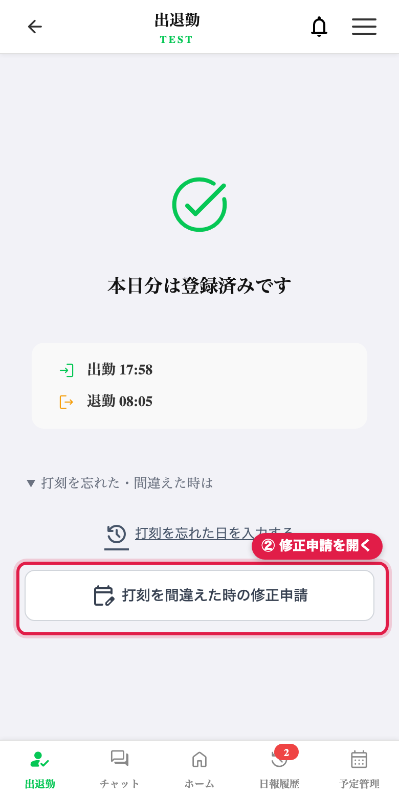
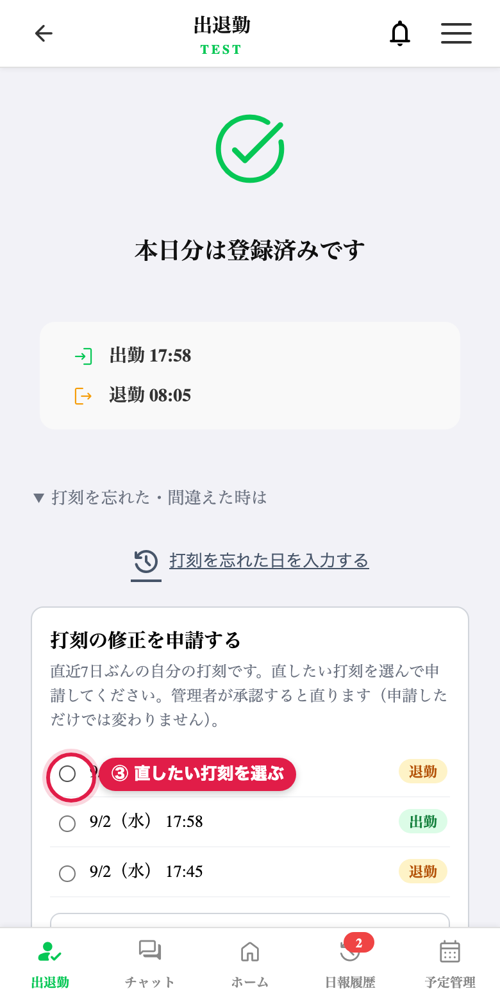
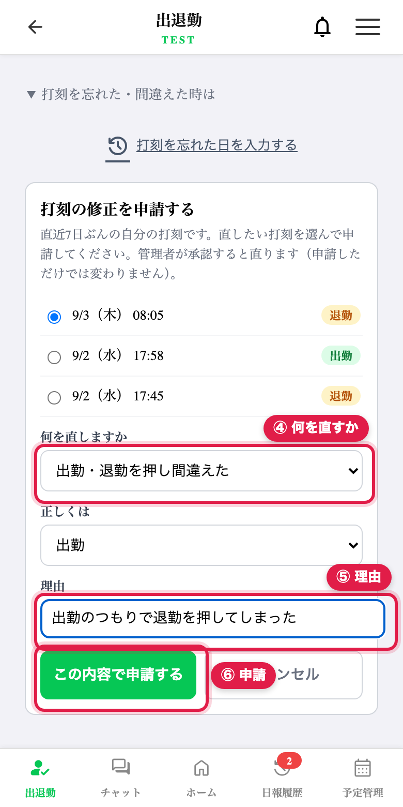
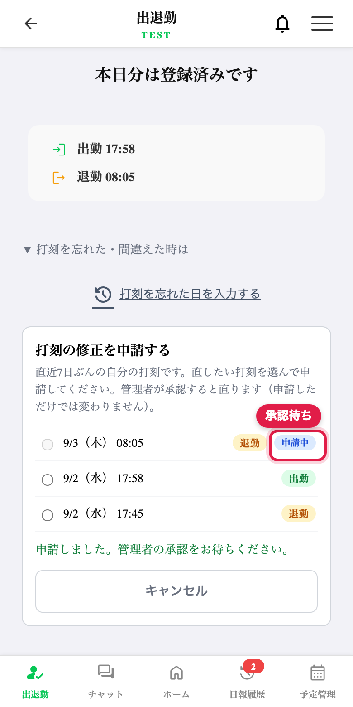

打刻を間違えた時に、直せるようにしました
2026年9月3日 ／ 出退勤（LINEミニアプリ）＋ 管理画面
きっかけ：「出退勤の打刻間違え打った為修正できますか」というご連絡をいただきました。
調べたところこれまでは誰も直せませんでした（打刻は追加しかできず、管理画面の勤怠も閲覧専用でした）。
さらに、実際のデータを見ると間違いが1回で終わらず連鎖していました。
実際に起きていたこと
| 日時 | 記録された内容 | 実際 |
|---|
| 9/1 17:45 | 退勤（後から入力） | 正しい |
| 9/1 17:58 | 出勤 | 退勤のつもりで押した（朝の出勤を打ち忘れていたため、画面が「出勤」を出していた） |
| 9/2 08:05 | 退勤 | 出勤のつもりで押した（前日の誤りでアプリが「出勤中」と判断していたため） |
打刻の種類は「直前の打刻」から決まるため、1回ずれると翌日以降もずれ続けます。
直す手段が無いままだと、ずれた勤怠がそのまま積み上がっていきます。
① 作業員がスマホから「修正を申請」します

出退勤の画面の下にある「打刻を忘れた・間違えた時は」を開きます。

「打刻を間違えた時の修正申請」を押します。

直近7日ぶんの自分の打刻が出るので、直したいものを選びます。

「何を直すか」（押し間違い／時刻違い／この打刻自体が不要）と理由を入れて申請します。

申請中の表示になります。この時点では打刻はまだ変わりません。
ポイント
申請しただけでは打刻は変わりません。
承認されると、作業員の画面にもその場で「承認されました」と出ます（開いたまま待てます）。
② 管理画面で承認します
左メニューの「打刻修正の承認」に件数バッジが出ます。誰の・どの打刻を・どう直すのか・理由が1行で分かるので、
内容を見て「承認」または「却下」を押します。
③ 直った記録は、元の値ごと残ります
承認すると打刻が直り、「修正済み（承認した人の名前）」と修正前の値が残ります。
「この打刻自体が不要」で承認した場合は、記録を消さずに「取消済み」として残します。
勤怠の記録として守っていること
- 作業員は自分では直せません。申請だけで、承認されて初めて反映されます。
- 誤打刻も消しません。「取消済み」として残し、集計からだけ外します。
- 直した記録には修正前の値と、誰がいつ直したかが必ず残ります。
- 自分が出した申請を自分で承認することはできません。
承認できる人：オーナー／管理者／事務／現場管理者 の4つの権限です。作業員は承認できません。
（残業申請・日報編集の承認と同じ範囲に揃えています。絞りたい場合はご相談ください）